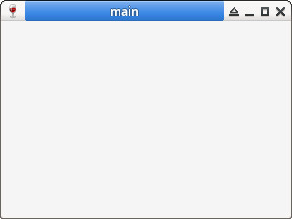

Steward
分享是一種喜悅、更是一種幸福
程式語言 - MASM32 - Dialog - Create Window
參考資訊：
http://winapi.freetechsecrets.com/win32/
http://masm32.com/board/index.php?topic=3584.0
Windows的視窗可以分成：Dialog、Single Document Interface(SDI)、Multiple Document Interface(MDI)三種類別，相較於SDI、MDI這兩類別的程式，Dialog類別是比較容易上手學習的一個類別，相當適合初學者入門學習，而Windows程式設計的精髓就是，學會其中一個類別，其餘類別都可以很容易上手，Windows控制項(如：Button、Edit)也是此類道理，比較需要注意的是，Windows視窗程式設計的核心是圍繞着事件處理(處理Message)，任何的視窗設定或者溝通都是以事件導向為原則，因此，寫出一個簡單的視窗框架，將有助於了解Windows視窗程式的運作
main.asm
.386
.model flat,stdcall
option casemap:none
include c:\masm32\include\windows.inc
include c:\masm32\include\kernel32.inc
include c:\masm32\include\user32.inc
includelib c:\masm32\lib\user32.lib
includelib c:\masm32\lib\kernel32.lib
.data
szCaption db "main", 0
CommandLine dd 0
hInstance dd 0
.code
WinMain proc hInst:DWORD, hPrevInst:DWORD, CmdLine:DWORD, CmdShow:DWORD
local msg:MSG
invoke CreateWindowEx, WS_EX_LEFT, WC_DIALOG, offset szCaption, WS_OVERLAPPEDWINDOW or WS_VISIBLE, 0, 0, 320, 240, NULL, NULL, NULL, NULL
@@:
invoke GetMessage, addr msg, NULL, 0, 0
cmp eax, 0
je @f
invoke DispatchMessage, addr msg
jmp @b
@@:
mov eax, msg.wParam
ret
WinMain endp
start:
invoke GetModuleHandle, NULL
mov hInstance, eax
invoke GetCommandLine
mov CommandLine, eax
invoke WinMain, hInstance, NULL, CommandLine, SW_SHOWDEFAULT
xor eax, eax
ret
end start
完成
